00 / PROLOGUE 序章
过去十年，「少女乐队」几乎等于「努力就一定会发光」。
2022 年之后，这个公式被拆了三次。
三个主角都不太会说话。 后藤一里在壁橱里弹了三年吉他，只为「出名之后可以不用和人打交道」；高松灯把想说的话写进笔记本，递出去都费劲； 井芹仁菜在愤怒里找不到出口。她们的共同点是——只有乐器响起来的时候，话才说得完整。
乐队不是解药，是不得不待在一起的地方。 三部作品都花了大量篇幅写「磨合」：谁不想练、谁不敢上台、谁在利用谁、谁又擅自离开。 音乐并不万能，但没有音乐就更没法开口——这才是它们真正的共同母题。
演奏是真的。 《孤独摇滚》请乐手做演奏参考与动作捕捉，还做了真人化的舞台演出；MyGO!!!!! 用 3DCG 拍完整场 live 长镜头； GBC 干脆让声优本人练到能上舞台。那种「真的在弹」的质感，是这一批作品最动人的部分。
Bocchi
The Rock!
ぼっち・ざ・ろっく！（孤独摇滚！）
后藤一里，通称「ぼっち」。一个连点餐都要在心里演练三遍的高中生。为了「靠乐队出名，从此不用和人说话」，
她把自己关进壁橱，每天练琴六小时，练成了网络上传说的「吉他英雄」——然后在公园里被伊地知虹夏一把捡走，
塞进了下北泽的 Live House STARRY。
这部动画最厉害的地方，是把社恐的内心小剧场做成了视觉奇观：黏土定格、恐怖片、8-bit 游戏、少女漫滤镜，
一集能换七八种画风。而到了第 4 话，当一里闭着眼睛把《ギターと孤独と蒼い惑星》弹完，
所有积攒的笑点会在一瞬间还给你——那不是天才的炫技，是一个人终于被听见。
在壁橱里弹了三年吉他，我以为自己准备好了一切；
结果连一句「请多关照」都说不出口。
結束バンド · Members
代表曲 · Discography
It's
MyGO!!!!!
BanG Dream! It's MyGO!!!!!（迷途之子）
五个人，五个方向。高松灯只写得出歌词，说不出别的话；千早爱音想在新学校「重新做人」；
要楽奈只关心一件事——有趣不有趣；长崎そよ还在等一支永远不会回来的乐队；椎名立希只想证明自己。
《It's MyGO!!!!!》把乐队番拍成了群像剧里的修罗场：误会、利用、逃避、翻脸，每一步都合情合理，每一步都伤人。
而它最著名的一集——第 10 话——用一场没有任何预告的 live，让所有憋着的话在《詩超絆》里同时炸开。
那不是和解，是「先把它唱出来再说」。这是三部里最疼的一部。
就算没人懂，我也要把这五个人，唱在一起。
— 高松灯 · 第 10 话“詩超絆”（意译）MYGO!!!!! · Members
代表曲 · Discography
Girls
Band Cry
ガールズバンドクライ（少女乐队呐喊）
井芹仁菜，高中退学，一个人跑到东京。她没有梦想，只有一肚子没处发的火。
在川崎的 Live House 里，她听见河原木桃香的吉他，然后决定：我要站在那儿。
《GBC》是三部里最「脏」也最「烫」的一部。全 3DCG 却做出了手绘的呼吸感，川崎的居酒屋、便利店、房租、打工——
它把「靠音乐活下去」写得一点也不浪漫。仁菜从头到尾都在生气，而这份怒气，恰好就是它最好听的地方。
我不想输给那个，连自己都讨厌的自己。
— 井芹仁菜 · 剧中心境（意译）トゲナシトゲアリ · Members
代表曲 · Discography
04 / RELATIONS 羁绊网络
十四个人，三种把彼此绑在一起的方式
把鼠标停在任意一个人身上，就能看见他/她与谁连线、为什么连在一起。线越亮，关系越要紧。
05 / COMPARE 对照
同样是少女乐队，切入的角度完全不同
孤独摇滚！
- 孤独的形状把自己关起来的孤独，能被看见、也很可爱
- 乐队如何成立被前辈「捡」进去，被动地进入人群
- 核心冲突我想被听见，但我连自我介绍都做不到
- 音乐风格轻快、明亮、青春感很强的吉他摇滚
- 看完你会想立刻学会一首歌，然后对着空气弹
It's MyGO!!!!!
- 孤独的形状人明明在一起，却各自想着完全不同的东西
- 乐队如何成立从一支解散的乐队废墟上，重新拼起来
- 核心冲突我们到底算不算「一起」，还是只是互相利用
- 音乐风格高速、凌厉、情绪浓度极高的乐队摇滚
- 看完你会想去重看第 10 话，并且不敢跟人吵架
GIRLS BAND CRY
- 孤独的形状被世界判定为「不合群」，于是干脆不认输
- 乐队如何成立为了某个人、为了不低头，硬凑出来的
- 核心冲突要活得像自己，还是活得「像个大人」
- 音乐风格嘶吼感十足、带朋克骨气的乐队摇滚
- 看完你会想骂一句脏话，然后去把琴练完
06 / ATMOSPHERE 场景
这些画面，就是作品本身
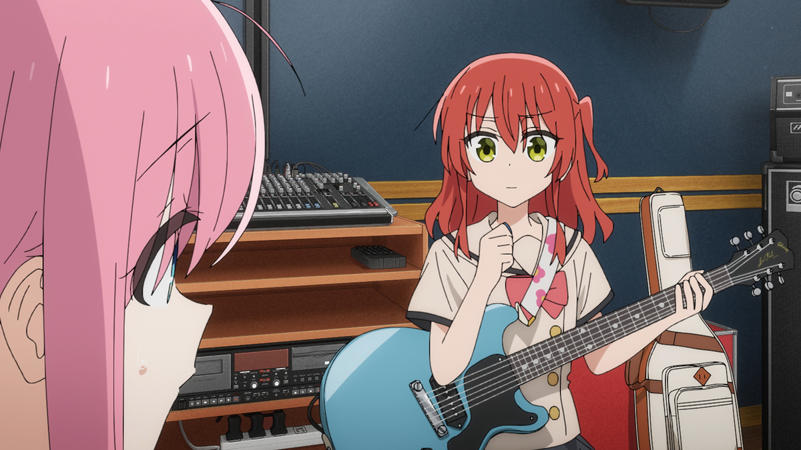
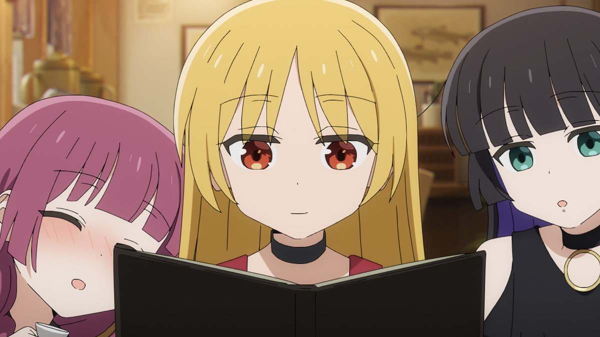
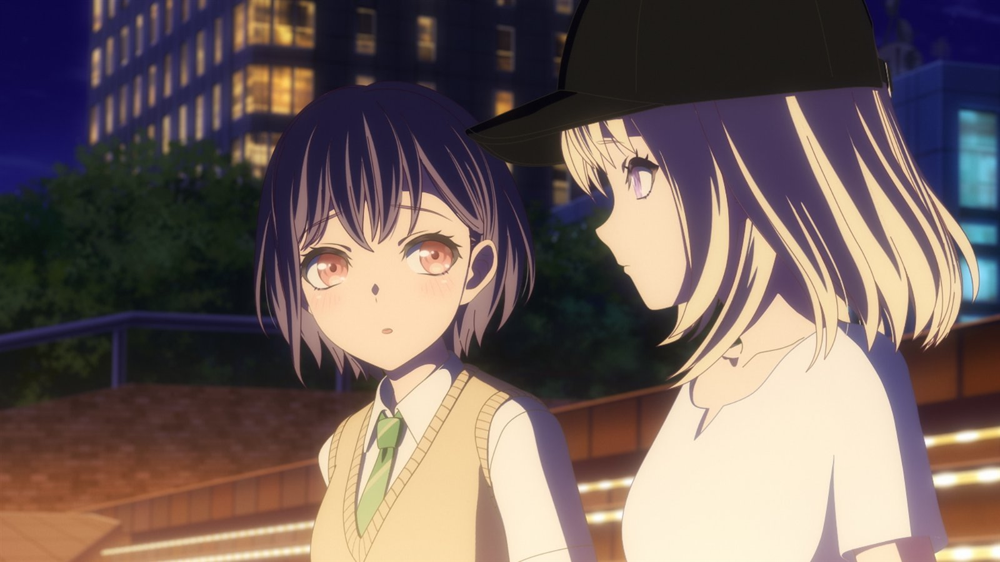
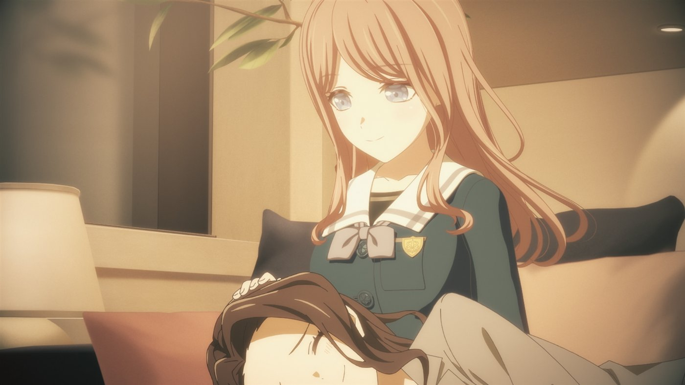
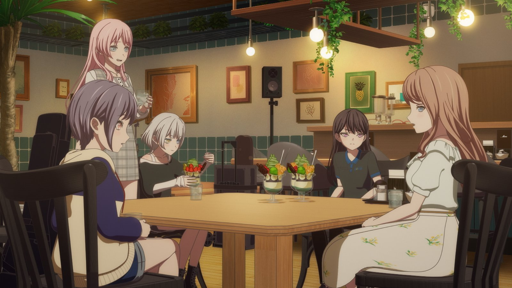
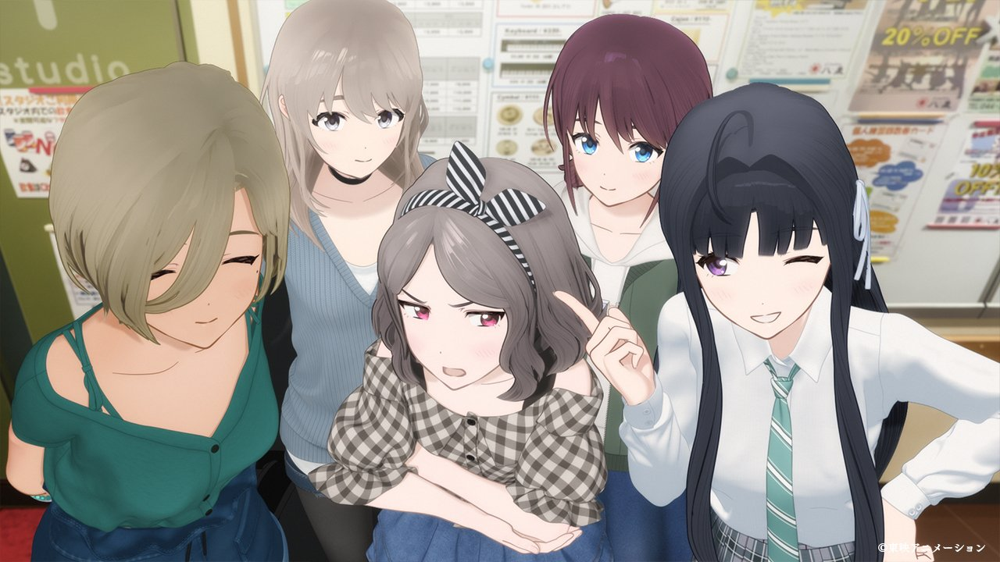
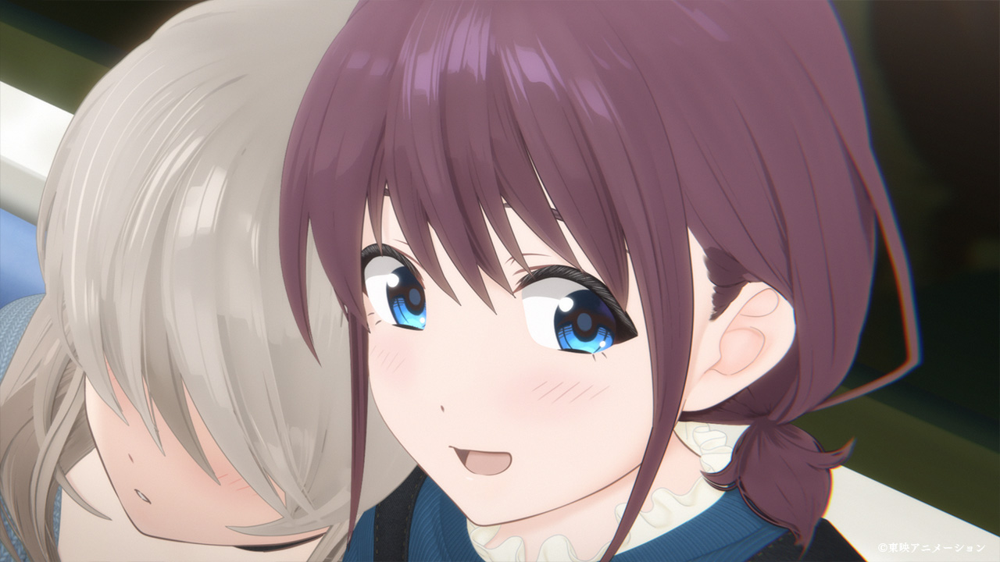
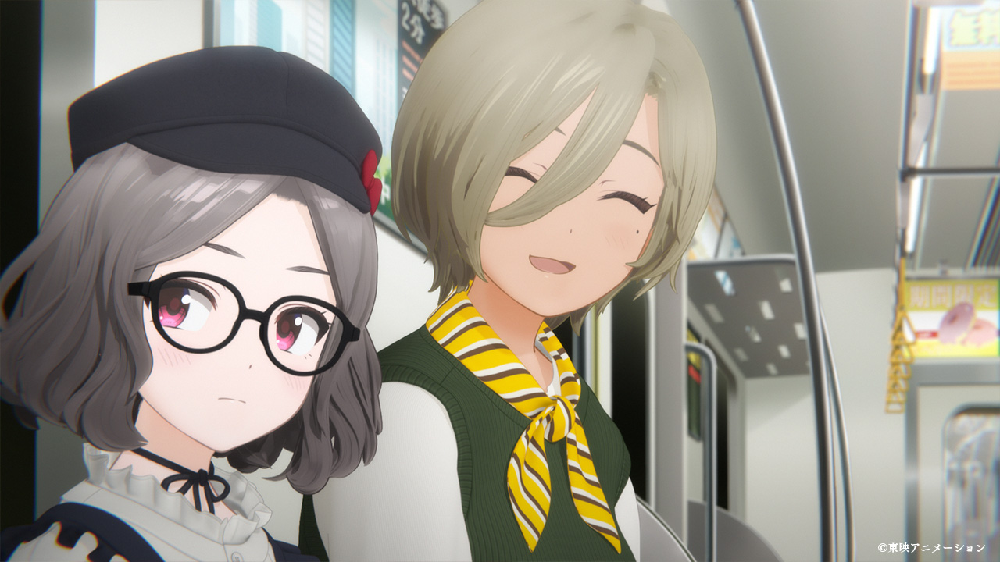
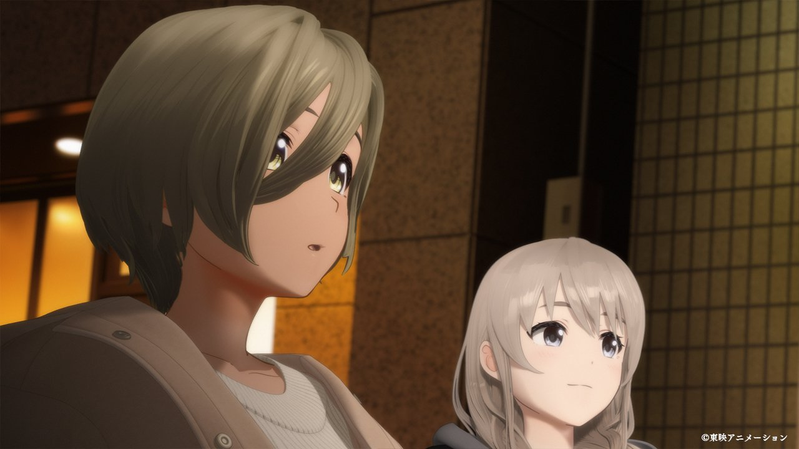
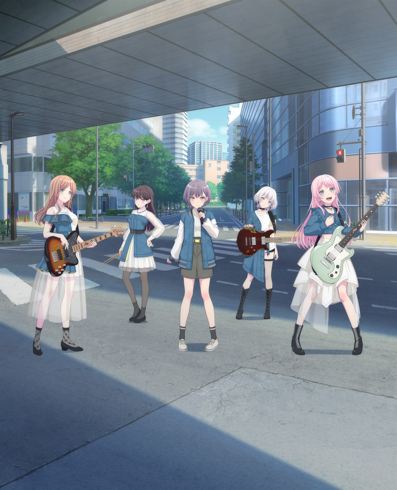
官方 PV / 特报 · Trailer Stills
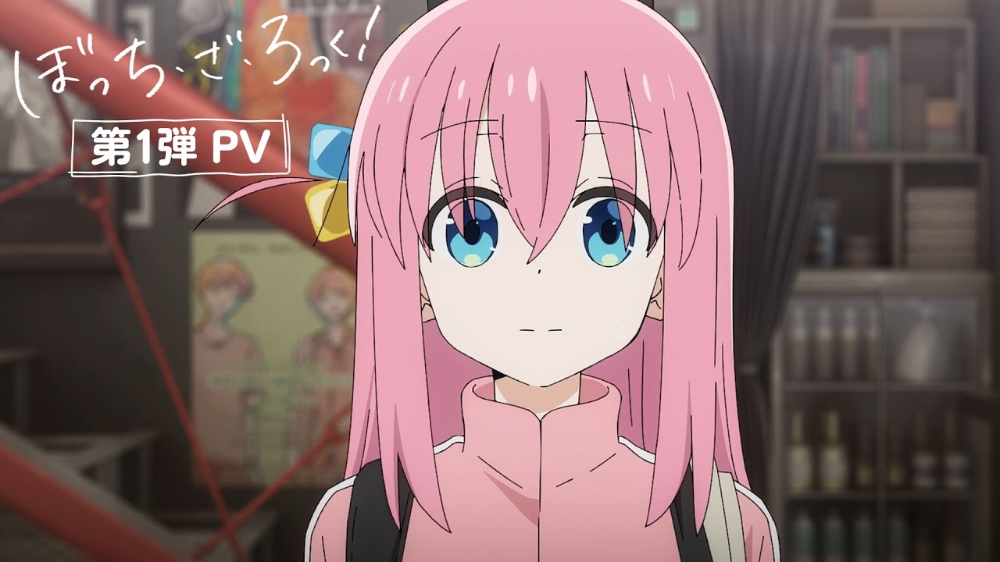
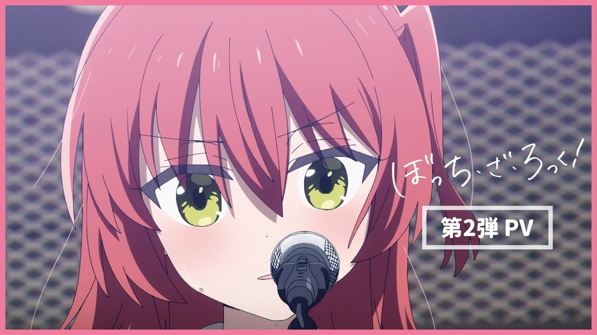
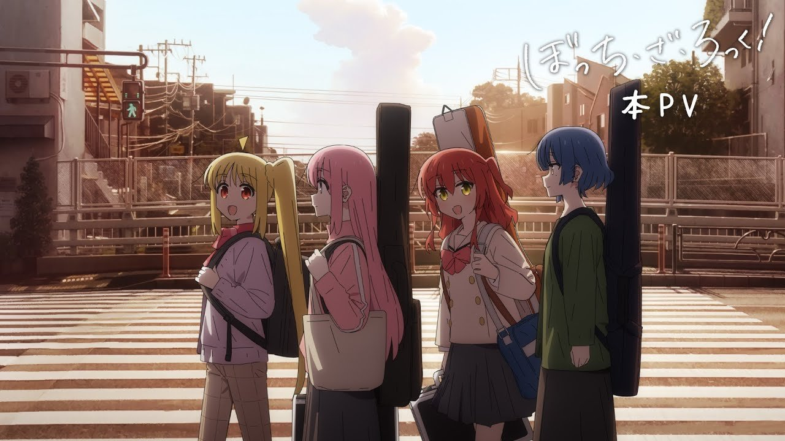
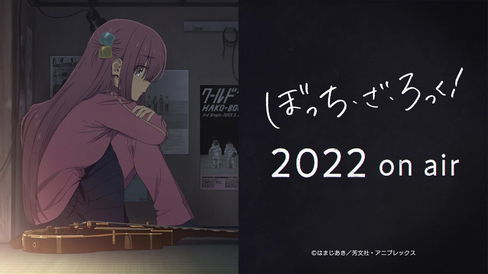
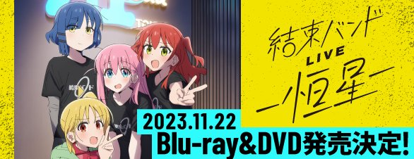
她们都在唱同一件事——
「我在这里」
这三部作品没有一个是「努力就会成功」的故事。一里依然不擅长说话，MyGO!!!!! 的五个人还是会在练习室吵架， 仁菜也未必真的赢过谁。但她们都在同一个地方找到了同一件事： 一个可以把「说不出口」变成声音的位置。
And that's why we still listen.